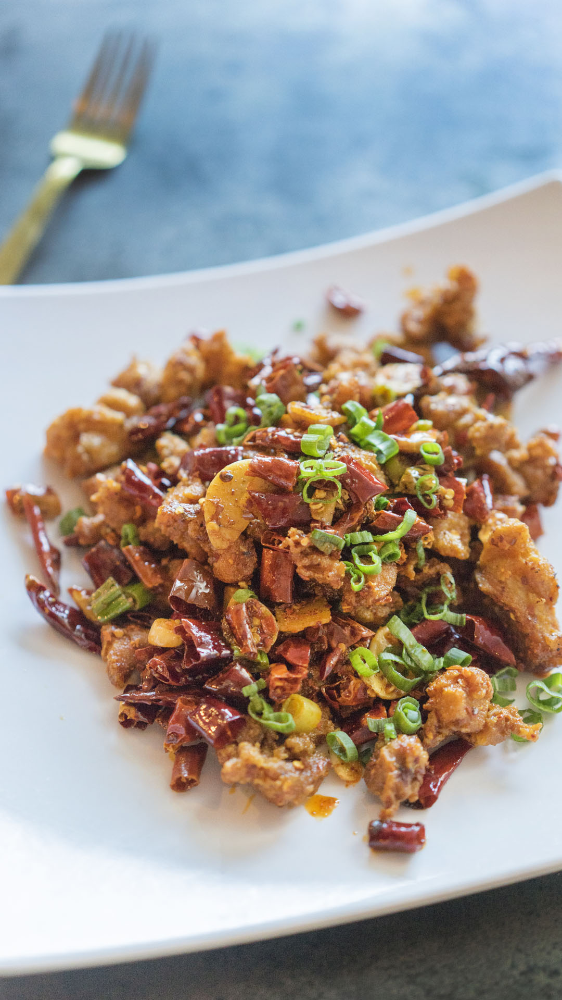

{% extends layout %}

{% block head %}
    <title> Better Menu </title>
    <style>
        body {
            background: url('../static/images/chinesedragon.jpg') no-repeat center center; /* 中国龙背景图 */
            background-size: cover;
            background-position: center 40%;
            font-family: 'ZCOOL XiaoWei', serif; /* 适合中文的字体 */
        }
        .welcome-message {
            position: absolute;
            top: 50%;
            left: 50%;
            transform: translate(-50%, -50%);
            color: #ffffff;
            text-align: center;
            opacity: 0;
            animation: fadeIn 2s ease-in-out forwards; /* 渐变动画 */
            font-size: 100px;
        }
        @keyframes fadeIn {
            to { opacity: 1; }
        }
        .chinese-food-gallery img {
            max-width: 200px; /* 调整为所需的图片宽度 */
            height: auto; /* 高度自动，保持宽高比 */
            margin: 10px; /* 外边距，确保图片之间有空间 */
        }
        .btn-container {
            position: absolute;
            bottom: 40px;
            right: 20px;
            display: flex;
            flex-direction: row; /* 按钮垂直排列 */
        }
        .btn-chinese-style {
            background-color: #C0392B !important;; /* 深红色 */
            color: #d7a01f !important;;
            border: none !important;;
            border-radius: 5px !important;;
            padding: 20px 40px !important;;
            margin-bottom: 20px !important;;
            margin-right: 20px !important; /* 在按钮之间添加右侧间隔 */
        }
        .qr-container {
            position: fixed;
            top: 100px; /* 距离顶部的距离 */
            right: 40px; /* 距离右侧的距离 */
            z-index: 1000; /* 确保在其他元素之上 */
        }
        .qr-container img {
            width: 200px; /* 调整QR码的大小 */
            height: auto; /* 保持宽高比 */
        }
        .btn-chinese-style:hover {
            background-color: #C0392B; /* 深红色 */
            color: #ffb200;
            border: none;
            border-radius: 5px;
            padding: 30px 60px; /* 增加padding使按钮更大 */
            margin-bottom: 10px;
            font-size: 40px; /* 增加字体大小 */
        }
        .water-ink-style {
            font-family: 'Ma Shan Zheng', cursive;
            font-size: 70px;
            opacity: 0;
            animation: fadeIn 2s ease-in-out forwards;
        }
    </style>
{% endblock %}


{% block body %}
<!-- Welcome Message -->
<div class="welcome-message">
    <h1>Welcome to bugkiller restaurant</h1>
</div>

<!-- Chinese Food Gallery -->
<div class="chinese-food-gallery">
    
    
    <!-- 更多中国菜图片 -->
</div>

<!-- Action Buttons -->
<div class="btn-container">
    <a href="/login" class="btn btn-chinese-style">Log in</a>
    <a href="/register" class="btn btn-chinese-style">register</a>
    <a href="/menu" class="btn btn-chinese-style">menu</a>
    <a href="/cart" class="btn btn-chinese-style">cart</a>
</div>

<!-- 字体 -->
<div class="water-ink-style">
    Delicious food at bugkiller restaurant ！
</div>

<div class="qr-container">
    
    <p>QR code to visit the homepage</p>
</div>

<!-- 登录判断逻辑 -->
<script type="text/javascript">
    window.onload = function() {
        var isLoggedIn = false; // set this based on the backend authentication status
        if (isLoggedIn) {
            document.getElementById('cart-link').style.display = 'block';
        }
    };
</script>

{% endblock %}
